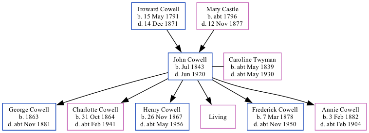

John Cowell 1843 - 1920
[ Home ] | [ Calendar ] | [ Surnames Index ] | [ Family History ]A laborer and the son of Troward Cowell (an agricultural laborer) and Mary Castle, John Cowell, the three times great-uncle of Nigel Horne, was born in Wingham, Kent, England in Jul 18431,2,3,4,5,6,7,8,9 and married Caroline Twyman (with whom he had 6 children: George William, Charlotte Priscilla Ann, Henry John, Emily Jane, Frederick Troward and Annie Mary, along with 1 surviving child) at St Andrews, Wickhambreaux, Kent, England on Aug 30, 186210.
John spent all of his life in Kent, England. Throughout his life, he lived in several places around the county: at Old Farm House in Wingham on Mar 30, 18511; at Wingham Street in Wingham on Apr 7, 18612; on London Road, Ditton on Apr 2, 187113; on Orchard Terrace, New Hythe Road, East Malling on Apr 3, 188114; on Lunsford Lane, East Malling on Apr 5, 189115; in East Malling in 19016; and at The Banks, Larkfield on Apr 2, 191116.
He died in Jun 1920 in Malling, Kent8.
Parents
- Troward was born on May 15, 1791
- Mary was born c. 1796
Children
- George William was born in 1863
- Charlotte Priscilla Ann was born on Oct 31, 1864
- Henry John was born on Nov 26, 1867
- Frederick Troward was born on Mar 7, 1878
- Annie Mary was born on Feb 3, 1882
Citations
- 1851 England Census Online publication - Provo, UT, USA: The Generations Network, Inc., 2005.Original data - Census Returns of England and Wales, 1851. Kew, Surrey, England: The National Archives of the UK (TNA): Public Record Office (PRO), 1851. Data imaged from the National
- 1861 England Census Online publication - Provo, UT, USA: The Generations Network, Inc., 2005.Original data - Census Returns of England and Wales, 1861. Kew, Surrey, England: The National Archives of the UK (TNA): Public Record Office (PRO), 1861. Data imaged from the National
- 1871 England Census Online publication - Provo, UT, USA: The Generations Network, Inc., 2004.Original data - Census Returns of England and Wales, 1871. Kew, Surrey, England: The National Archives of the UK (TNA): Public Record Office (PRO), 1871. Data imaged from the National
- 1881 England Census Online publication - Provo, UT, USA: The Generations Network, Inc., 2004. 1881 British Isles Census Index provided by The Church of Jesus Christ of Latter-day Saints © Copyright 1999 Intellectual Reserve, Inc. All rights reserved. All use is subject to the
- 1891 England Census Online publication - Provo, UT, USA: The Generations Network, Inc., 2005.Original data - Census Returns of England and Wales, 1891. Kew, Surrey, England: The National Archives of the UK (TNA): Public Record Office (PRO), 1891. Data imaged from The National
- 1901 England Census Online publication - Provo, UT, USA: The Generations Network, Inc., 2005.Original data - Census Returns of England and Wales, 1901. Kew, Surrey, England: The National Archives of the UK (TNA): Public Record Office (PRO), 1901. Data imaged from the National
- 1911 England Census Online publication - Provo, UT, USA: Ancestry.com Operations, Inc., 2011.Original data - Census Returns of England and Wales, 1911. Kew, Surrey, England: The National Archives of the UK (TNA), 1911. Data imaged from the National Archives, London, England.
- England & Wales, Death Index: 1984-2005 Online publication - Provo, UT, USA: The Generations Network, Inc., 2007.Original data - General Register Office. England and Wales Civil Registration Indexes. London, England: General Register Office. © Crown copyright. Published by permission of the Cont
- England & Wales, FreeBMD Birth Index, 1837-1915 Online publication - Provo, UT, USA: The Generations Network, Inc., 2006.Original data - General Register Office. England and Wales Civil Registration Indexes. London, England: General Register Office. © Crown copyright. Published by permission of the Cont
- KFHS CD22
- 1851 England, Wales & Scotland Census - Findmypast (was age 8 and the son of the head of the household)
- 1861 England, Wales & Scotland Census - Findmypast (was age 13 and the son of the head of the household)
- 1871 England, Wales & Scotland Census - Findmypast (was age 30 and the head of the household)
- 1881 England, Wales & Scotland Census - Findmypast (was age 39 and the head of the household)
- 1891 England, Wales & Scotland Census - Findmypast (was age 48 and the father of the head of the household)
- 1911 Census for England & Wales - Findmypast (was age 68 and the head of the household)
Media
England & Wales births 1837-2006 - BMD/B/1843/3/AH/000679/007
Canterbury Marriages - GBPRS/CANT/M/97033441/1
England & Wales marriages 1837-2008 - BMD/M/1862/3/AZ/000426/026
England & Wales deaths 1837-2007 - BMD/D/1920/2/AZ/000185/051
1881 England, Wales & Scotland Census - GBC/1881/0004492699
1891 England, Wales & Scotland Census - GBC/1891/0005472923
1911 Census for England & Wales - GBC/1911/RG14/03970/0103/1
Family Tree
Generated by Ged2Site. Last updated on Jul 20, 2025